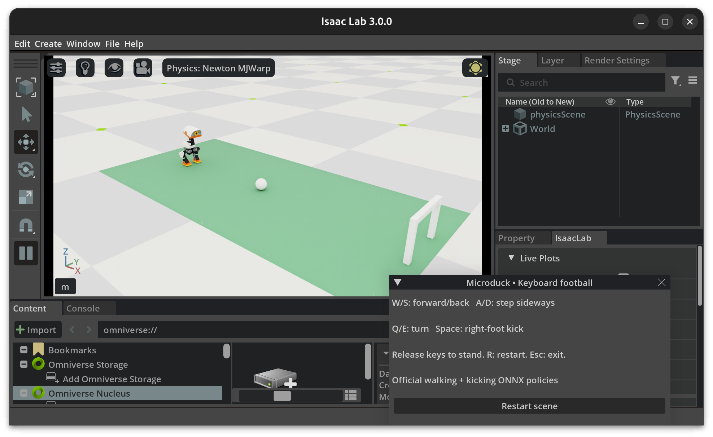

SELF-PACED WORKSHOP
Meet Microduck: play football first
Meet Microduck: play football first. Explore the concepts, run the lab, and inspect its results.
A small robot that learns new skills
Microduck is an open biped from Pollen Robotics and Hugging Face with 14 actuated joints. Start with the official walking and right-foot kick ONNX policies in Isaac Sim, then learn how Isaac Lab trains and evaluates new skills.
Open the pitch and try the keyboard
Complete setup and run this from the repository root. Click the Isaac Sim window to focus it. The robot, ball and goal use the same dimensions and physical settings as the autonomous task. Use an English keyboard input mode so an IME does not consume movement keys.


python3 scripts/workshop.py manual \
--seconds 600 \
--output outputs/manual-football-01| Key | Action |
|---|---|
| W / S | Forward / backward |
| A / D | Step left / right |
| Q / E | Turn left / right |
| Release movement keys | Stand with zero velocity command |
| Space | Right-foot kick, then stand |
| R / Esc | Restart / exit |
Walk toward the ball, stop with the ball in front of the right foot, and face the goal before pressing Space. Reposition after a miss; press R after a fall. You choose the target and direction; the policies coordinate the joints.
How Isaac Sim builds the experiment
Scroll horizontally to view the full diagram
The robot USD includes joints, collision geometry and inertial properties. The ball has a 3.5 cm radius and 45 g mass; the goal opening is 24 cm wide. Isaac Sim provides the scene and rendering; Isaac Lab configures the Newton physics backend.
cfg.scene.ball = RigidObjectCfg(
prim_path='{ENV_REGEX_NS}/Ball',
spawn=sim_utils.SphereCfg(
radius=.035,
mass_props=sim_utils.MassPropertiesCfg(mass=.045),
collision_props=sim_utils.CollisionPropertiesCfg(),
rigid_props=UsdPhysicsRigidBodyCfg(rigid_body_enabled=True)),
init_state=RigidObjectCfg.InitialStateCfg(pos=(0., 0., .035)))How two small policies control the body
| File | Size | Role |
|---|---|---|
| walk.onnx | 793,705 bytes, about 0.79 MB | Walking and standing |
| kick-teacher.onnx | 793,685 bytes, about 0.79 MB | Right-foot kick |
Both actors map 61 observations to 14 joint actions through hidden layers of 512, 256 and 128 units with ELU activations. Their input normalization is embedded in ONNX. Keyboard commands set velocity, not individual joint angles. A bounded kick blends back to standing; this lab does not load the course residual actor.
obs = env.observation_manager.compute(update_history=True)['policy']
action = walk(obs)
if kick_start is not None:
phase = (step - kick_start) * .02
weight = 1. if phase < .14 else max(0., 1. - (phase - .14) / .12)
if weight:
action = torch.lerp(action, kick(obs), weight)
env.action_manager.process_action(action)The lab holds the kick for 0.14 s and blends back over 0.12 s. This is a handoff setting, not retraining of the official weights. Small policy files do not imply a small simulator memory footprint.
python3 scripts/workshop.py inspect-model --model models/walk.onnxWho decided the next step?
Check your understanding
Which decisions did you make for the robot?
Show explanation
You identified the ball and goal, estimated distance, selected a route and stance, and decided when to kick. Chapters 6 and 7 automate those decisions.
Next, inspect the mechanism and the timing between policy and physics.